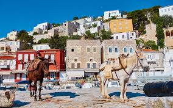
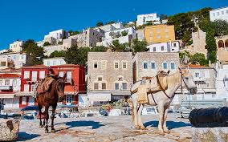
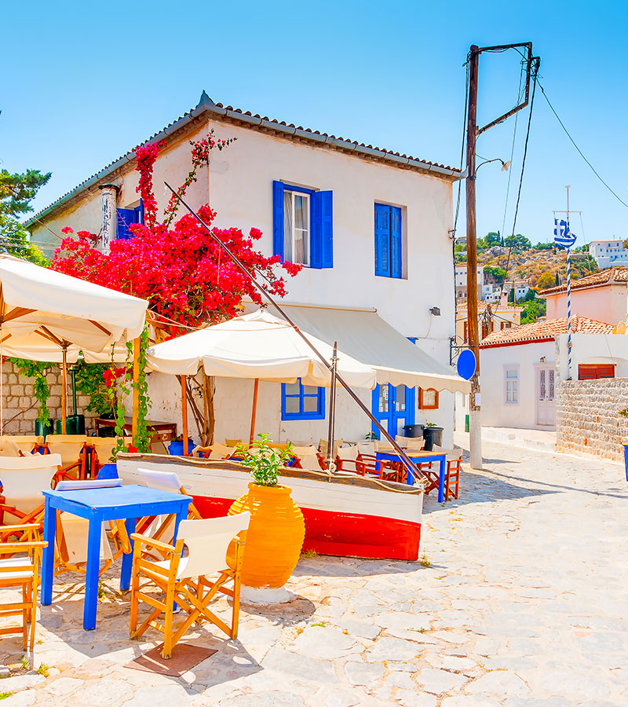

One of Greece's Saronic Islands, Hydra offers increadible views and natural springs that travelers can experience.

There are no cars on Hydra, so you expect to see donkeys, horses, goats, etc.
One of Greece's Saronic Islands, Hydra offers increadible views and natural springs that travelers can experience.
There are no cars on Hydra, so you expect to see donkeys, horses, goats, etc.
Hydra is a cultural center: artists of many mediums find inspiration here.
You can enjoy the summer breeze and delicious Mediterranean cuisine while watching the sun set.

"I had such a wonderful time on the island of Hydra that I am still there to this day"
"People are friendly, the food is great, the weather is hot. It is very peaceful and relaxing. Eat, sleep, drink"
"I've heard wonderful things about the place; I'll have to check it out someday!"